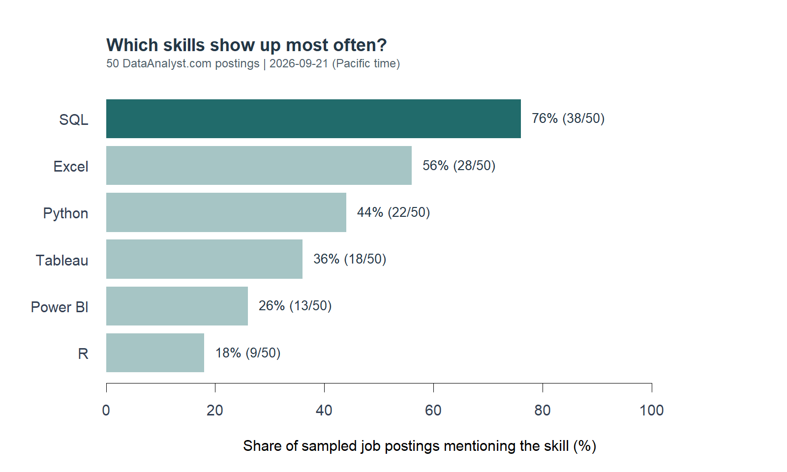

| Skill | Postings | Share |
|---|---|---|
| SQL | 38 | 76% |
| Excel | 28 | 56% |
| Python | 22 | 44% |
| Tableau | 18 | 36% |
| Power BI | 13 | 26% |
| R | 9 | 18% |
Which data skills should I learn first?
Web scraping
Careers
A small sample of job postings helps narrow down where to spend study time.
Learning data analysis comes with a long shopping list: Excel, SQL, Python, R, and several dashboard tools. Trying to learn all of them at once is a good way to finish none of them. If I had a few weeks to prepare for an analyst role, which skill would I work on first?
To make that choice less arbitrary, I used R’s rvest package to collect 50 job postings from DataAnalyst.com. I looked for six familiar tools and counted how often employers mentioned each one.
A small, focused sample
The collection took place on September 21, 2026, Pacific time. I used the first page of the site’s entry-level category, which labels roles as requiring zero to three years of experience. I kept active listings with “data analyst” in the title, excluded senior and leadership titles, removed duplicates, and took the first 50 qualifying listings in the displayed order. The board’s publication dates ran from May 14 to September 8, 2026.
For each job, rvest extracted the responsibilities and requirements. I left out company descriptions and related-job suggestions, since those could mention skills unrelated to the position. Each skill counted once per posting, even if it appeared several times. “PowerBI” and “Power BI” counted as the same tool. I also reviewed the matched text to check that words such as “Excel” referred to software.
The public pages needed no login, and the site’s robots.txt had no disallowed paths at collection. Requests were spaced at least three seconds apart, and the pages were saved locally so rerunning the analysis would not repeatedly contact the website.
What showed up most often?

SQL appeared in 38 of the 50 postings (76%). That makes it the clearest starting point among the six tools I checked. Excel appeared in 28 postings, while Python appeared in 22. The gap matters when study time is limited: I would want to be comfortable working with tables before adding another language to my list.
The tools also overlap. 20 postings mentioned both SQL and Python, and 23 mentioned at least one of Tableau or Power BI. These are useful combinations to practice, although a mention might describe a preferred skill or one of several acceptable tools. It does not always mean the employer requires it.
How I would use this
I would start with a small SQL project: take a sales dataset, join the customer and order tables, and calculate monthly revenue. Then I would check the totals in Excel and write a short explanation of what changed. That gives me something concrete to discuss in an interview.
Once that feels manageable, I would choose the next tool from the jobs I actually want. For a role mentioning Python, I could automate the same cleaning steps. For a dashboard role, I could turn the results into a simple Tableau or Power BI report. There is little reason to learn both dashboard tools immediately just because they appear on a general skills list.
This sample has limits. It comes from one board, includes older listings, and contains 39 remote roles. Its entry-level label may also be imperfect. Keyword counts measure mentions, not proficiency or the effect of a skill on getting hired. A low count for R here does not make it unhelpful in research or economics.
For this sample, my first investment would be SQL, supported by Excel practice. After that, I would use a shortlist of actual target jobs to decide what to learn next.
Data and code
The GitHub project folder contains the saved pages, cleaned data, results, and a README with replication instructions. Download the job data or skill counts. The code below uses rvest for extraction and base R for counting and plotting. See the rvest documentation for the scraping functions.
NoteR code: collect and clean the postings
# Run from blog/posts/post2: Rscript code/scrape.R
# Default: reuse saved HTML. --live downloads into a NEW dated snapshot folder.
library(rvest)
dir.create("data/raw", recursive = TRUE, showWarnings = FALSE)
live <- "--live" %in% commandArgs(trailingOnly = TRUE)
cache <- if (live) file.path("data", paste0("snapshot-", format(Sys.time(), "%Y%m%d-%H%M%S"))) else "data/raw"
dir.create(cache, recursive = TRUE, showWarnings = FALSE)
base_url <- "https://www.dataanalyst.com"
listing_url <- paste0(base_url, "/job-experience/entry-level-data-analyst-jobs")
# Three seconds between requests; no retries or access restriction workarounds.
get_page <- function(url, name) {
path <- file.path(cache, name)
if (file.exists(path)) return(read_html(path))
if (!live) stop("Saved HTML missing: restore data/raw or use --live after reviewing site rules.")
Sys.sleep(3)
message("Reading ", url)
page <- read_html(url)
xml2::write_html(page, path)
page
}
# Check this small site's robots rules before any new collection.
if (live) {
rules <- readLines(paste0(base_url, "/robots.txt"), warn = FALSE)
writeLines(rules, file.path(cache, "robots.txt"))
disallow <- grep("^Disallow:", rules, value = TRUE, ignore.case = TRUE)
if (any(nzchar(trimws(sub("^[^:]+:", "", disallow))))) {
stop("Robots rules changed: review them before collecting any job pages.")
}
writeLines(format(Sys.time(), tz = "UTC", usetz = TRUE), file.path(cache, "collected_at.txt"))
}
page <- get_page(listing_url, "listing.html")
cards <- html_elements(page, "a.cms-jobs-counter")
field <- function(selector) html_text2(html_element(cards, selector))
jobs <- data.frame(
title = trimws(field("h3")), company = trimws(field(".card-link-home")),
location = field(".card-job-category-wrapper-location .card-job-category-text"),
workplace = field(".card-job-category-wrapper-workplace .card-job-category-text"),
experience = field(".card-job-category-wrapper-experience .card-job-category-text"),
published = field(".card-job-category-wrapper-published .card-job-category-text"),
status = field(".card-job-category-text-expired"),
url = xml2::url_absolute(html_attr(cards, "href"), base_url)
)
stopifnot(nrow(jobs) > 0, !anyNA(jobs$title), !anyNA(jobs$url))
# Define the sample before reading skill frequencies: first 50 matching cards,
# in the site's displayed order, on this single listing page. No pagination.
jobs$eligible <- jobs$experience == "0 - 3 years" & jobs$status == "Active" &
grepl("data analyst", jobs$title, ignore.case = TRUE) &
!grepl("\\b(senior|sr|lead|principal|manager|director)\\b", jobs$title, ignore.case = TRUE)
jobs$eligible[is.na(jobs$eligible)] <- FALSE
write.csv(jobs, "data/listing_audit.csv", row.names = FALSE, fileEncoding = "UTF-8")
jobs <- jobs[jobs$eligible & !duplicated(jobs$url) &
!duplicated(paste(tolower(jobs$company), tolower(jobs$title), jobs$location)), ]
jobs <- head(jobs, 50)
jobs$eligible <- NULL
jobs$description <- jobs$requirements <- NA_character_
for (i in seq_len(nrow(jobs))) {
slug <- sub(".*/", "", jobs$url[i])
detail <- get_page(jobs$url[i], paste0(slug, ".html"))
# Only responsibilities and requirements; exclude company bios and related jobs.
jobs$description[i] <- html_text2(html_element(detail, ".rich-text-block-3"))
jobs$requirements[i] <- html_text2(html_element(detail, ".rich-text-block-4"))
if (is.na(jobs$description[i]) || is.na(jobs$requirements[i]) ||
nchar(jobs$description[i]) + nchar(jobs$requirements[i]) < 100) {
stop("Missing job text: inspect ", jobs$url[i])
}
}
jobs$collected_at_utc <- readLines(file.path(cache, "collected_at.txt"), warn = FALSE)[1]
write.csv(jobs, "data/jobs.csv", row.names = FALSE, fileEncoding = "UTF-8")
message("Saved ", nrow(jobs), " jobs; cache: ", cache)
NoteR code: count skills and create the chart
# Run from blog/posts/post2: Rscript code/analyze.R
# No website requests: all analysis uses the saved CSV.
dir.create("results", showWarnings = FALSE)
jobs <- read.csv("data/jobs.csv", stringsAsFactors = FALSE, fileEncoding = "UTF-8")
stopifnot(nrow(jobs) > 0, !anyDuplicated(jobs$url),
!anyNA(jobs$description), !anyNA(jobs$requirements))
text <- paste(jobs$description, jobs$requirements)
# Word boundaries avoid counting SQL inside NoSQL and R inside other words.
# Excel is case sensitive to avoid the ordinary verb "excel"; R is uppercase.
patterns <- c(SQL = "(?i)\\bSQL\\b", Excel = "\\bExcel\\b",
Python = "(?i)\\bPython\\b", R = "\\bR\\b",
Tableau = "(?i)\\bTableau\\b", `Power BI` = "(?i)\\bPower\\s*BI\\b")
flags <- sapply(patterns, function(p) grepl(p, text, perl = TRUE))
required_flags <- sapply(patterns, function(p) grepl(p, jobs$requirements, perl = TRUE))
counts <- data.frame(skill = names(patterns), jobs = colSums(flags),
percent = 100 * colMeans(flags),
requirements_section_jobs = colSums(required_flags), row.names = NULL)
counts <- counts[order(-counts$jobs, counts$skill), ]
write.csv(counts, "results/skill_counts.csv", row.names = FALSE)
write.csv(cbind(jobs[c("company", "title", "url")], flags),
"results/job_skill_flags.csv", row.names = FALSE, fileEncoding = "UTF-8")
# Short contexts make it possible to review every keyword match.
audit <- do.call(rbind, lapply(names(patterns), function(skill) {
do.call(rbind, lapply(seq_len(nrow(jobs)), function(i) {
matches <- gregexpr(patterns[[skill]], text[i], perl = TRUE)[[1]]
if (matches[1] < 0) return(NULL)
data.frame(company = jobs$company[i], title = jobs$title[i], skill = skill,
context = substring(text[i], pmax(1, matches - 70), matches + 100),
url = jobs$url[i])
}))
}))
write.csv(audit, "results/match_audit.csv", row.names = FALSE, fileEncoding = "UTF-8")
metrics <- c(sample_size = nrow(jobs), companies = length(unique(jobs$company)),
sql_and_python = sum(flags[, "SQL"] & flags[, "Python"]),
either_visualization = sum(flags[, "Tableau"] | flags[, "Power BI"]),
remote = sum(jobs$workplace == "Remote"))
write.csv(data.frame(metric = names(metrics), value = unname(metrics)),
"results/metrics.csv", row.names = FALSE)
# One simple chart, with both percentages and job counts.
png("results/skills.png", width = 1600, height = 960, res = 180)
par(mar = c(5, 6, 5, 3), family = "sans", bg = "white", col.axis = "#344054")
plot_counts <- counts[nrow(counts):1, ]
y <- barplot(plot_counts$percent, horiz = TRUE, names.arg = plot_counts$skill,
las = 1, xlim = c(0, 115), axes = FALSE, border = NA,
col = ifelse(plot_counts$skill == counts$skill[1], "#216B6B", "#A6C5C5"),
xlab = "Share of sampled job postings mentioning the skill (%)")
axis(1, at = seq(0, 100, 20))
text(plot_counts$percent + 2, y,
labels = sprintf("%.0f%% (%d/%d)", plot_counts$percent, plot_counts$jobs, nrow(jobs)),
adj = 0, cex = 0.9, col = "#243746")
title("Which skills show up most often?", adj = 0, col.main = "#243746")
collection_date <- format(as.POSIXct(jobs$collected_at_utc[1], tz = "UTC"),
tz = "America/Los_Angeles", format = "%Y-%m-%d")
mtext(sprintf("%d DataAnalyst.com postings | %s (Pacific time)",
nrow(jobs), collection_date),
side = 3, line = 1, adj = 0, cex = 0.8, col = "#52616B")
dev.off()
capture.output(sessionInfo(), file = "results/session-info.txt")
print(counts, row.names = FALSE)
print(metrics)